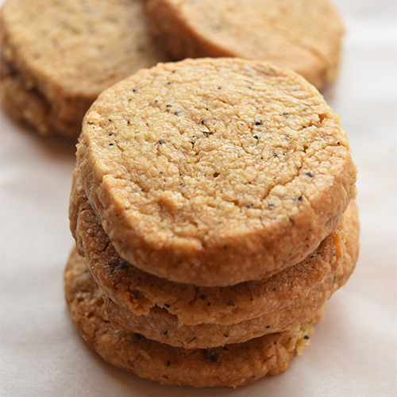

Home
Cardamon Coffee Cookies

Description
This recipe uses cardamom, known as the queen of spices. Cardamom is said to improve digestive and respiratory issues and, with its refreshing aroma, is also believed to have a calming effect. It pairs perfectly with coffee. Enjoy the delightful texture of the cardamom seeds
Source
Ingredients
- Lavie Fermented Butter (Unsalted) AOP - 85g
- Suzuran Granulated Sugar (100% Beet) - 50g
- Organic JAS Instant Coffee - 1 teaspoon
- Boiling Water - 1 teaspoon
- Organic Cardamom Seeds - 4 seeds
- Weak Flour (Dolce (Ebetsu Seifun))
Steps
- Bring the butter to room temperature to soften.
- Break the green cardamom pods, remove the black seeds, and chop them finely with a knife.
- Mix the instant coffee with boiling water to make a strong coffee.
- In a bowl, mix the softened butter and granulated sugar well with a rubber spatula.
- Add the dissolved coffee and blend well.
- Add the chopped cardamom and mix until evenly distributed.
- Add the weak flour and mix roughly.
- Knead the mixture by hand and form it into a single mass.
- Place the dough on a piece of plastic wrap and shape it into a log.
- Twist the ends of the wrap tightly and chill the dough in the refrigerator for about 1 hour until firm.
- Preheat the oven to 180°C (356°F).
- Cut the dough into 1 cm slices.
- Place the slices on a baking sheet lined with parchment paper and bake in the preheated oven at 180°C for about 15 minutes. Once baked, transfer to a cake cooler or similar to cool slightly before serving.